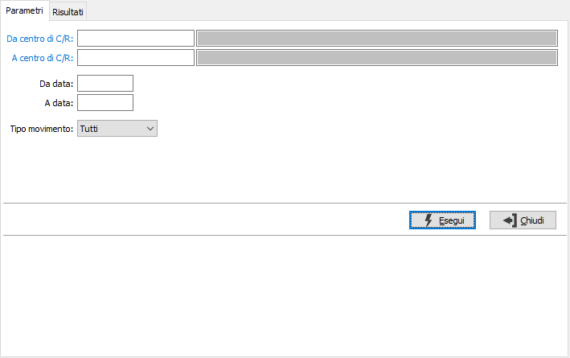
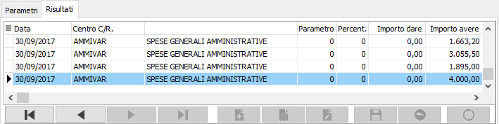
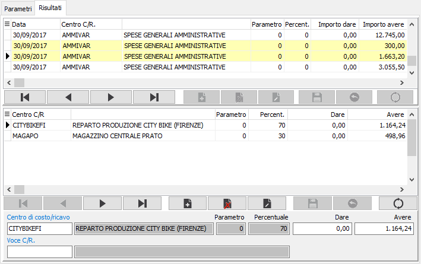

Ripartizione movimenti transitori
Il programma consente di elaborare i movimenti che utilizzano centri di costo/ricavo definiti transitori, per generare altri movimenti collegati contenenti gli effettivi centri di costo/ricavo diretti oppure intermedi che potranno a loro volta essere oggetto di successivo ribaltamento.
Il programma si articola su due finestre video. La prima, Parametri, consente la definizione dei parametri di analisi.

DA CENTRO C/R.: eventuale codice del centro di costo/ricavo, presente in anagrafica, da cui si vuole iniziare la selezione di analisi. Confermando a vuoto, la selezione inizia dal primo codice valido. Sul campo sono attive le funzioni di ricerca (F9).
A CENTRO C/R.: eventuale codice del centro di costo/ricavo, presente in anagrafica, con cui si vuole terminare la selezione di analisi. Confermando a vuoto, la selezione termina con l’ultimo codice valido. Sul campo sono attive le funzioni di ricerca (F9).
DA DATA: eventuale data del movimento da cui deve iniziare l’analisi dei movimenti relativamente ai precedenti parametri di selezione. Confermando a vuoto, l’analisi inizia con il primo movimento valido.
A DATA: eventuale data del movimento con cui si desidera terminare l’analisi dei movimenti relativamente ai precedenti parametri di selezione. Confermando a vuoto, l’analisi si conclude con l'ultimo movimento valido.
TIPO MOVIMENTO: definisce il tipo di movimenti da analizzare. Valori ammessi: Tutti; Contabili; Extracontabili.
Confermando tramite pressione del pulsante Esegui, viene avviata la selezione e richiamata la sezione Risultati.

Nella parte superiore vengono riportati i centri di costo/ricavo trovati come risultato della selezione effettuata. Con il doppio clic del mouse su di una riga è possibile effettuare la ripartizione del rigo selezionato; se presente una ripartizione per il centro di costo/ricavo questa verrà inserita nella parte sottostante e saranno effettuati in automatico i calcoli necessari per ripartire l'importo del rigo nelle relative percentuali. Nel caso in cui non esista una ripartizione verrà proposta una richiesta per proseguire con l'inserimento manuale. Le righe per cui è già stata inserita una ripartizione figurano in un colore diverso. Se previsto in configurazione sarà presente ed utilizzabile anche la Voce di costo/ricavo.

La parte inferiore della finestra contiene, come spiegato precedentemente, la ripartizione del centro di costo/ricavo che può essere stata generata automaticamente, dalle ripartizioni presenti per il centro di costo/ricavo selezionato, oppure inserita manualmente. In questa sezione è possibile apportare le necessarie modifiche.
Al termine delle operazioni premendo il pulsante Salva oppure il relativo tasto F10 sarà richiesta la conferma per la registrazione.